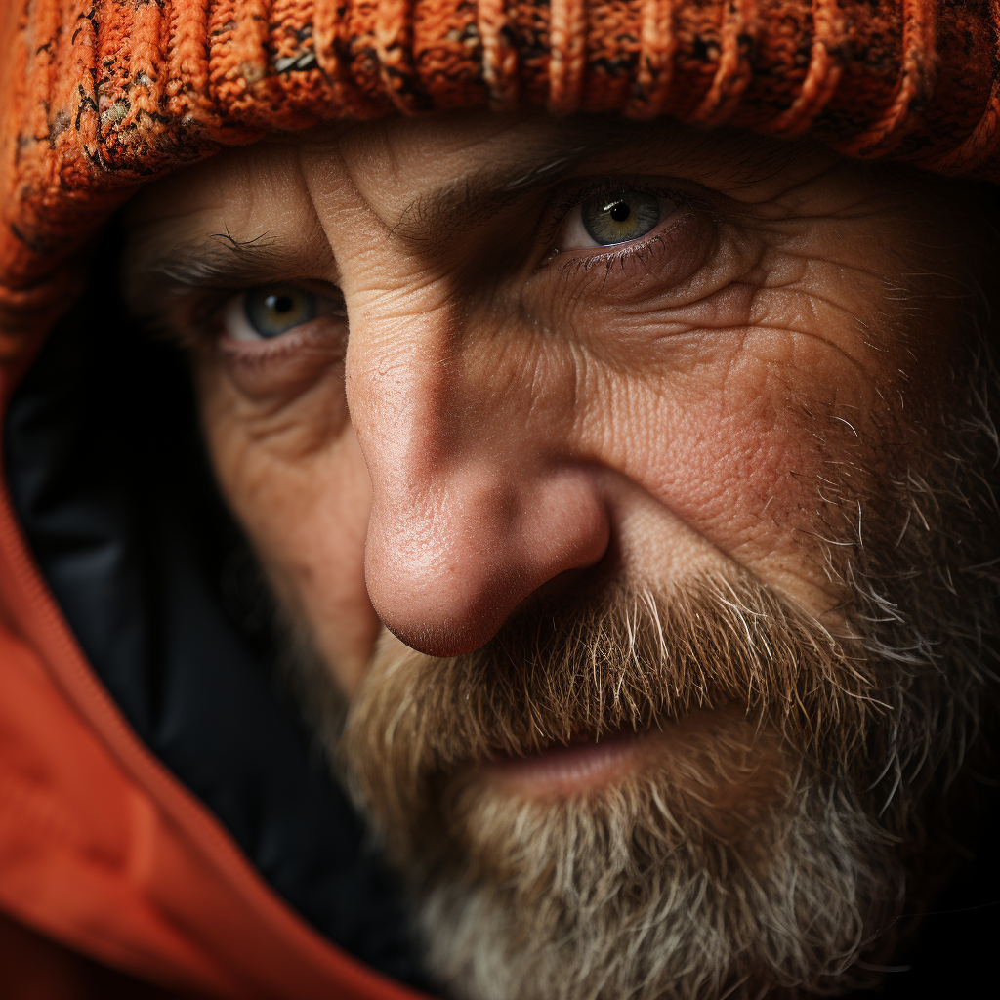

Bobby Jenkins
- Winner of "Best Newcomer" - South Wales Modern Art Festival 2023
- Silver Medal in Men's Slalom - Beijing Winter Olympics 2022
- Several works on display at Tate Modern
About the Artist
Bobby Jenkins was born on the 11th January 1972, emerging from the vibrant streets of South Wales as a modern artistic luminary. Raised in a the wilds of Brecon after fleeing his family home aged only 6, his canvases echoed the primal nature of the valleys, a symphony of chaos and harmony. Trained in traditional techniques by woodland creatures, Jenkins seamlessly blends classical artistry with contemporary expression. His studio, a sanctuary of creativity . . . which is also a nature sanctuary, houses abstract masterpieces that invite viewers to delve into the intricate dance of colours and forms. Jenkins accepts commissions for private work, click here to submit a request and a scurry of squirrels will pass your enquiry onto Jenkins.